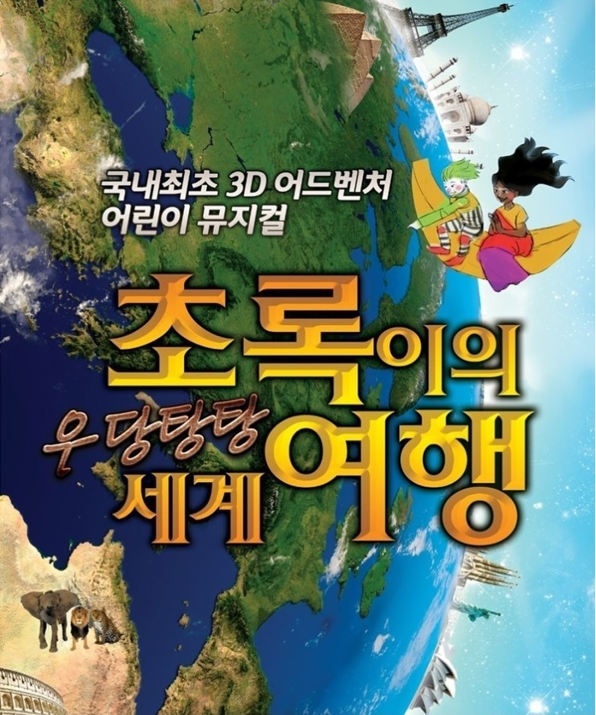
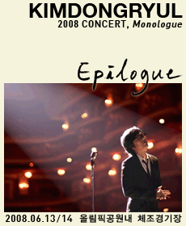
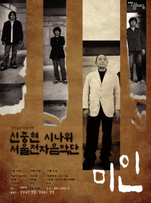
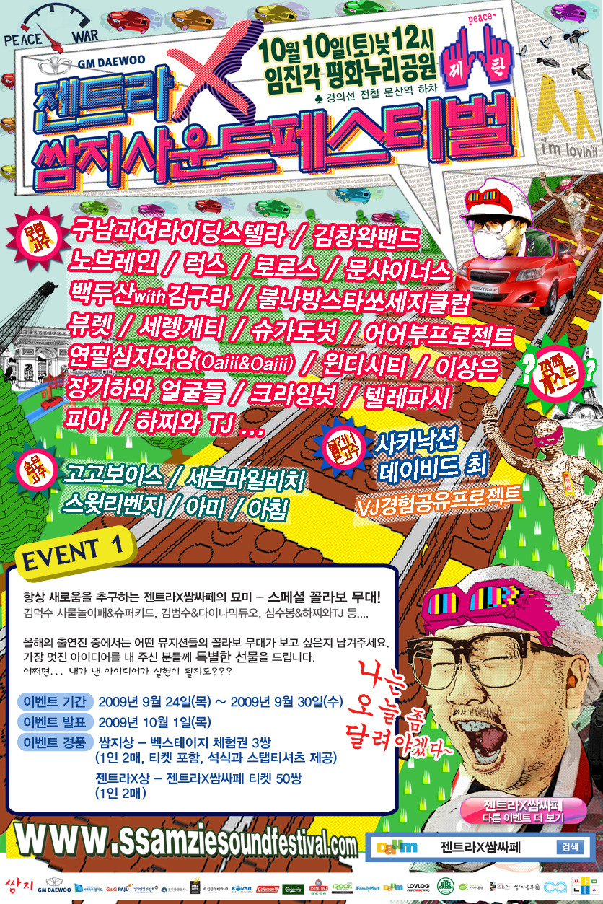
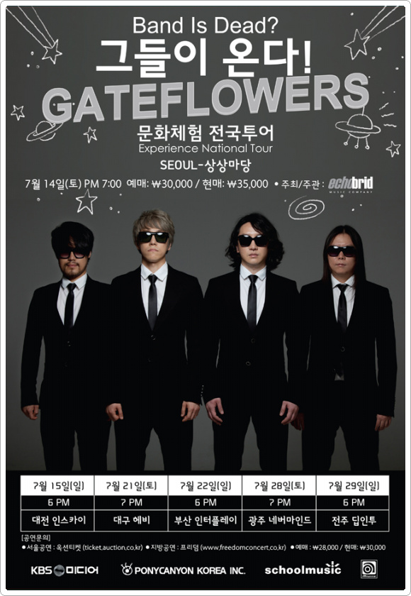
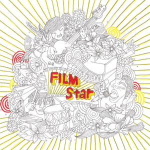
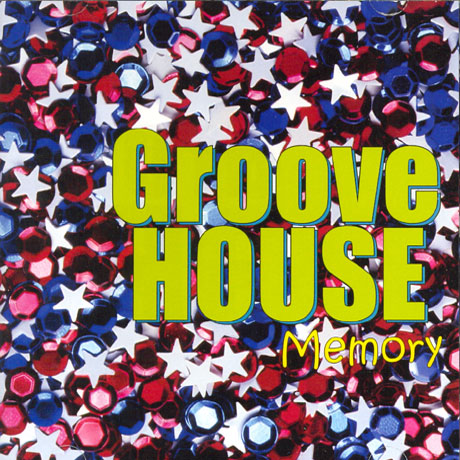
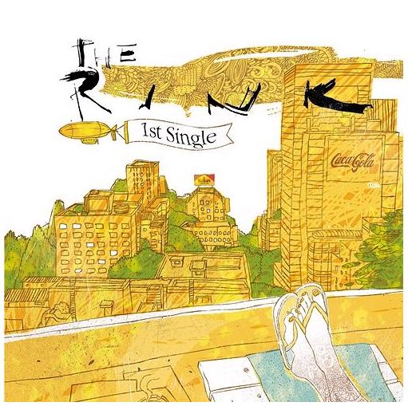
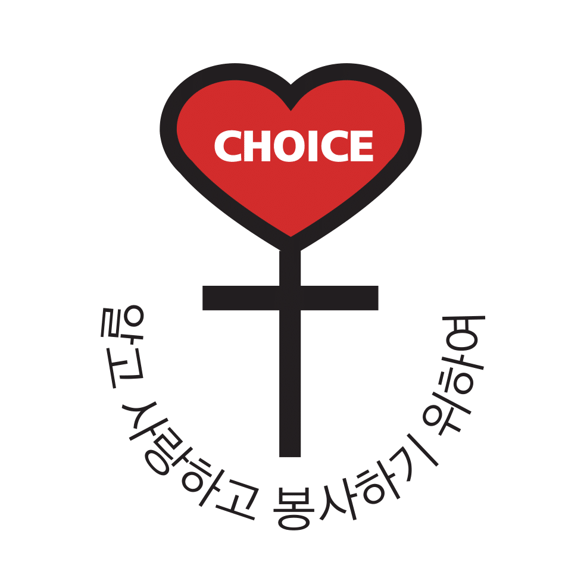
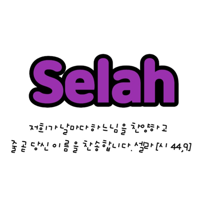

소하 고등학교
2회 졸업
1998~2000
Profile
음향 전공을 기반으로 녹음실, 콘서트, 뮤지컬, 대학 출강, 밴드 등 폭넓은 현장에서 축적한 경험과 지식을 바탕으로 각 공간과 목적에 맞는 최적의 음향 시스템 세팅과 컨설팅을 제공합니다.
Education
2회 졸업
1998~2000

실용음악학과 음향 전공 학사 졸업
사용 가능 프로그램 : PROTOOLS, RX6, QLab
2007~2010
Career

레코딩 엔지니어
2008~2010
실용음악 음향 담당 사원
2011
실용음악학부 음향 전공 교수
2013
AS, 연구소 사운드 개발, 기획마케팅
2014~2025
Freelancer
Musical
대학로 뮤지컬 음향 감독, 세팅, 오퍼레이팅, RF
2011~2013
대학로 뮤지컬 음향 감독, 세팅, 오퍼레이팅, RF
2012

소월아트홀 뮤지컬 음향 감독, 세팅, 오퍼레이팅, RF
2012
Concert

스테이지 스태프
2008

스테이지 스태프
2008

스테이지 스태프, 드럼 테크니션
2009

스테이지 스태프
2012
Album

서브 레코딩 엔지니어 by.Echobrid
2008

서브 레코딩 엔지니어 by.Echobrid
2009

서브 레코딩 엔지니어 by.Echobrid
2009
코러스 레코딩 엔지니어
2012
Performance
음향 스태프
2009
음향 스태프
2009
음향 스태프
2009
음향 오퍼레이터
2012
음향 감독, 세팅, 오퍼레이팅, RF
2013
Catholic
광명지구 소하동성당
1990~2019
제15 영등포-금천 지구 시흥4동성당
2020~현재
12대 음악 팀장
14,15대 회장
<가톨릭신문> 비다누에바 100차 기념 인터뷰
2009~2011
2014~2016
드럼 & 퍼커션 세션
2016~2019

전례분과
드럼 & 퍼커션 & 음향
<유튜브> 제13회 수원교구 창작성가제 '수선전분-나눔'
2019~2022

드럼 & 퍼커션 & 음향
<유튜브> 가톨릭 청년 찬양팀 셀라
2023~현재
준회원
음향 엔지니어, 드럼/퍼커션 연주자
2024~현재
리더 & 드럼
<인스타그램> 가톨릭 록밴드 세인트록
2025~현재
Etc.
드럼
<유튜브> 영원한 승리자 (kt wiz 서포터즈 카이져스 비공식 응원가)
2010~2015
대표 & 음향 감독
2019~2020